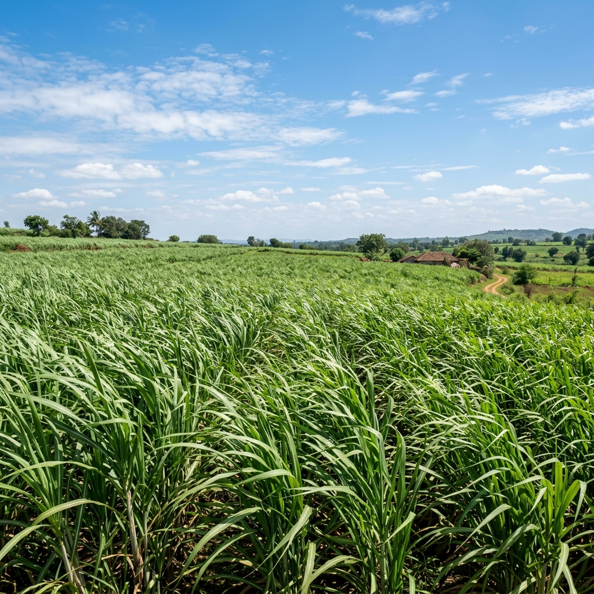
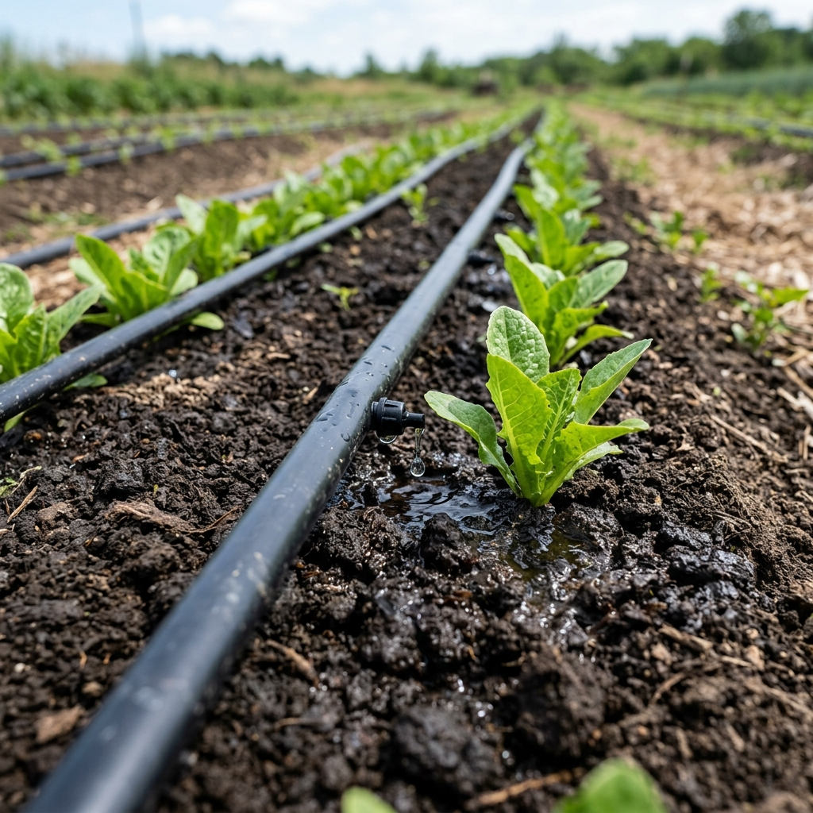

Healthy Sugarcane Crop
Sugarcane (Saccharum officinarum) is a tropical crop cultivated for the production of sugar, jaggery, ethanol and biofuel. It requires a warm climate with temperatures between 20°C and 35°C, fertile well-drained loamy soil and abundant sunlight for optimum growth.
A healthy sugarcane crop has bright green leaves, thick and straight stalks, well-developed roots and minimal pest or disease damage. Maintaining soil moisture between 60–80% of field capacity promotes healthy root development and increases sugar accumulation.
The crop generally requires about 1500–2500 mm of water throughout its growing season. Timely irrigation, balanced fertilizers containing Nitrogen (N), Phosphorus (P) and Potassium (K), and proper weed management significantly improve cane yield and sugar recovery.

Drip Irrigation System
Drip irrigation is a modern irrigation technique in which water is supplied slowly and directly to the root zone through pipes, emitters and valves. This method minimizes evaporation and surface runoff.
Compared to flood irrigation, drip irrigation can reduce water consumption by 30–60% while increasing crop productivity. It provides uniform soil moisture, improves nutrient uptake and reduces weed growth because water reaches only the crop roots.
In sugarcane cultivation, drip irrigation is especially beneficial during the germination and grand growth stages where water demand is high. Fertilizers can also be supplied through the drip system using a process called fertigation, improving fertilizer efficiency.
Major components include:
- Main pipeline
- Sub-main pipes
- Drip laterals
- Emitters
- Filters
- Control valves

Soil Moisture Sensor
A soil moisture sensor measures the amount of water present in the soil. It continuously monitors soil conditions and sends real-time data to the CaneSense irrigation system.
The sensor works by measuring changes in electrical resistance or capacitance of the soil. Wet soil conducts electricity differently than dry soil, allowing the sensor to estimate moisture content accurately.
The sensor readings help determine:
- When irrigation should start
- When irrigation should stop
- Amount of water required
- Water stress level of the crop
- Overall soil health
Using soil moisture sensors prevents both over-irrigation and under-irrigation, conserving water while promoting healthy root growth and higher crop yield.

Weather Monitoring Station
A weather monitoring station is an automated system that continuously collects environmental data required for precision agriculture. It plays a key role in generating accurate irrigation recommendations.
The station measures several weather parameters, including:
- Air Temperature
- Relative Humidity
- Rainfall
- Wind Speed
- Wind Direction
- Atmospheric Pressure
- Solar Radiation
The collected data is transmitted to the CaneSense platform where AI algorithms analyze weather conditions along with soil moisture data. If rainfall is expected, irrigation can be postponed, preventing water wastage and reducing irrigation costs.
Weather monitoring stations improve irrigation planning, increase water-use efficiency, reduce crop stress and support sustainable farming practices.